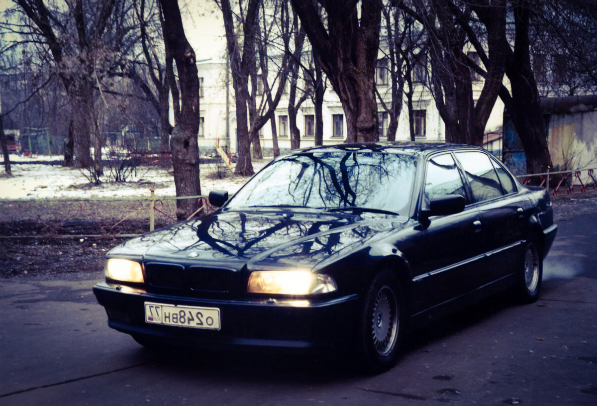

Автомобиль выпускался с 2000 по 2003 год в кузове седан и универсал (Touring). BMW 528i E39 – эта модификация производилась с 1995 по 2001 год и была доступна с БМВ М52. С сентября 1998 года на 39-ю установлен обновленный двигатель обозначенный индексом TU, а система Single VANOS была заменена на Double VANUS.
Культовый Bmw E39

Машина e39 снималась в фильме "Бумер"
Вследствие русскому кинофильму «Бумер» увеличился также в отсутствии этого большой потребность в машины Bмв. Уже После выхода трагедии «бэхи» добились невиданную известность во российская федерация также государствах СНГ. Из Числа баварских машин, в каковых перемещались основные герои фильмы, существовали различные модификации. Припомним, которые автомобили презентованы во преступной злоключении Петра Буслова. Посмотреть Фильм можно здесь